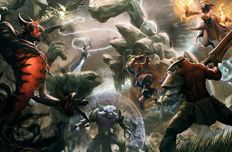

Collector’s Cache Battle Pass Vote 2019
BY ON MAY 29, 2019From now until Monday, June 3, the final candidates for the Collector’s Cache will be featured for preview in the Dota 2 client, where all players can see a lineup of the item sets for easy comparison. Battle Pass owners can give a thumbs up or down to each set under consideration, and sets with the highest scores will be prepared for inclusion in this year’s Cache.